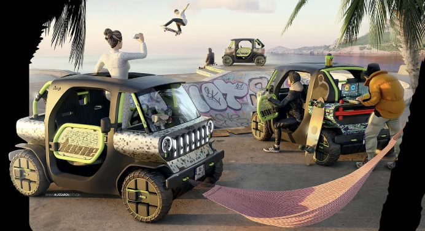

Last week Torontonians breathed some of the worst air on the planet as wildfire smoke turned the sky orange and forced evacuations across northern Ontario — a preview of what's becoming a defining feature of Canadian summers. Cutting transportation emissions won't put out a fire, but it's one of the few levers ordinary drivers can actually pull — and our NZEV Pilot is about as cheap and easy a lever as it gets.
Jeep Dune
Here's what happens when city commuting meets off-road attitude. The Jeep Dune is a fully electric, off-road-inspired city car that already meets our BC NZEV Bylaw 24.06. This is the kind of vehicle our Pilot is designed to bring to your streets. Would you drive one?
We've applied to the BC Minister of Transportation for an NZEV Pilot and need your support. Expressions of Interest are open to all Vancouver Island municipalities, regional districts, First Nations and the Gulf Islands — email info@evisland.ca to get your community on the list. For more information, visit nzevpilot.ca.
Cheers, Dave Haberman
